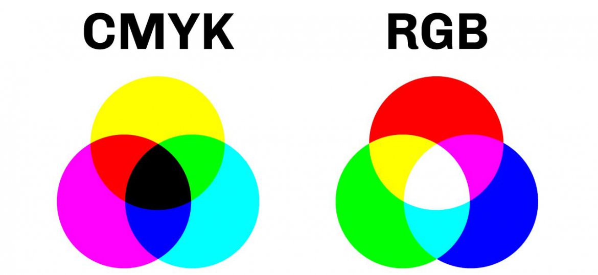
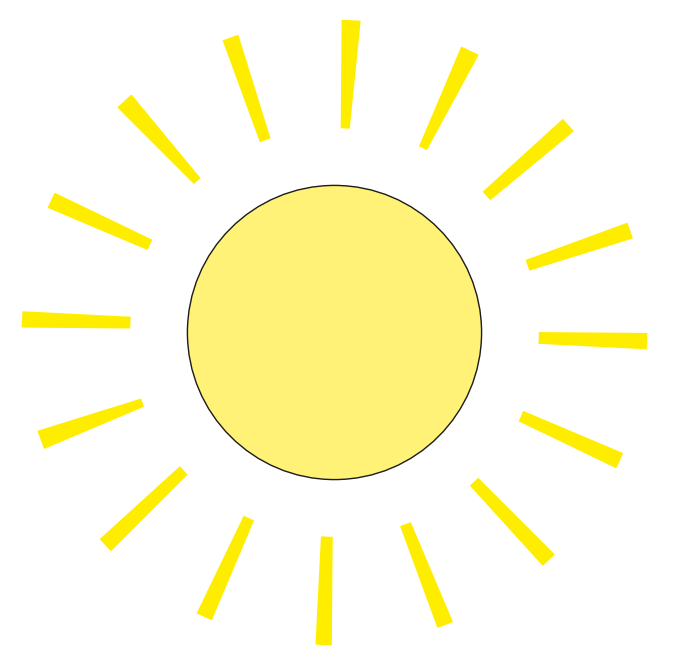
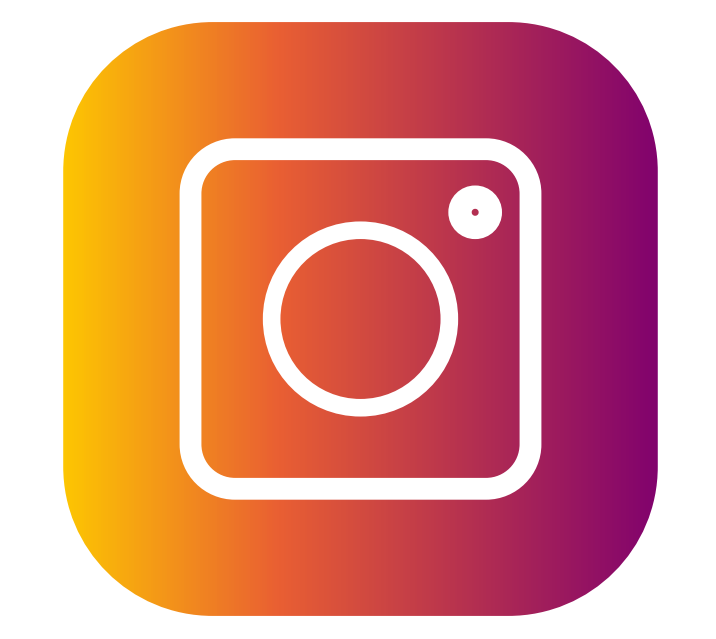
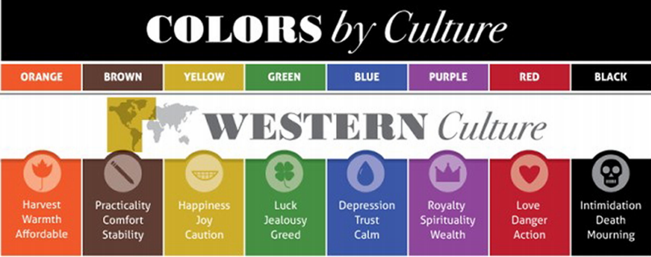
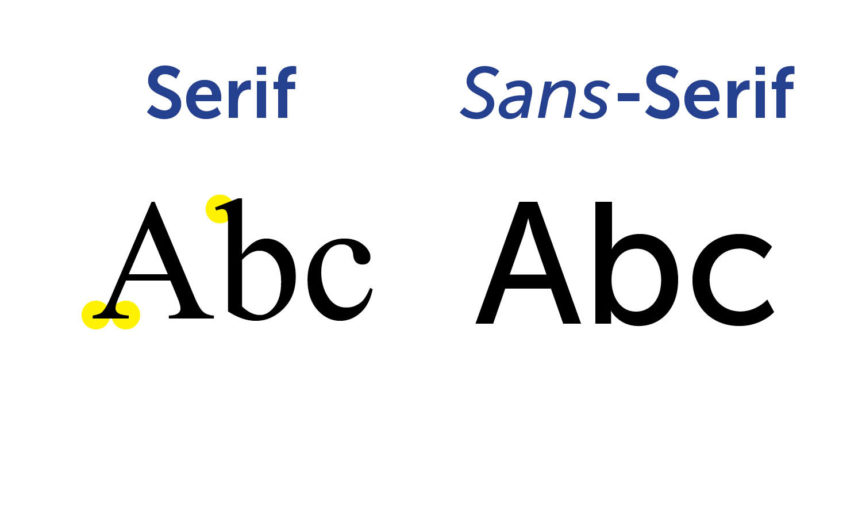
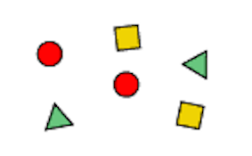
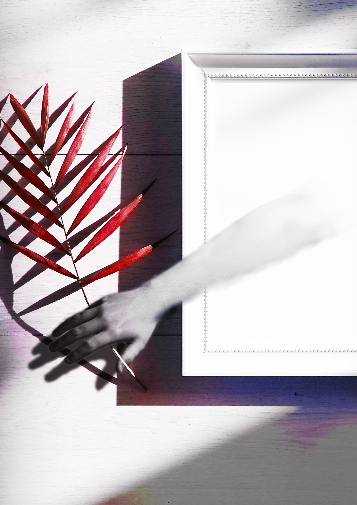

CARSTEN: DESIGN
ILLUSTRATOR: GRUNDLÆGGENDE
Illustrator er et af de mange softwares som er udviklet af Adobe. I illustrator bliver det lavet vektorbaseret grafik, i stedet for pixel baseret grafik, når man laver noget. Det er vigtigt når man skal lave forskellige former for grafik til responsive hjemmesider eller apps. Det er nemmere at lave en vektor baseret fil som kan bruges i alle sammenhæng, end at lave en nyt pixelbaseret version hver gang grafikken skal bruges. Vi kan bruge Illustrator til ting som produktemballage, reklamer, logoer, ikoner og mange andre ting man kunne bruge på hjemmesider (2021, Adobe Illustrator, Wikipedia, set den 16 Dec 2020,https://en.wikipedia.org/wiki/Adobe_Illustrator).
Vi lærte helt basale Illustrator ting på dagen, som fx hvilke redskaber der gjorde hvad, men også hvordan man lavede artboards. Vi startede med at lave 8 artboards i én kolonne, de skulle have 72 ppi. 72 ppi betyder pixels per inch, og 72 pixels per inch er det vi vælger at bruge for at optimere designet til en digital skærm. Vores artboards havde 800x600 resolution. Pixel resolution er altid forskellig i forhold til hvilket projekt man er i gang med at designe. De artboards vi lavede skulle også bruge RGB, vi bruger RGB fordi RGB er mest optimalt til digitale skærme da vores skærme sender lys. Havde vi lavet et design vi skulle printe, havde det været optimalt at bruge CMYK. De ville det være fordi man kan sende et RGB baseret design til en printer, men der er mange flere farver indenfor RGB så man måske ikke får de samme farver printet som man ville, hvis man bare havde arbejdet med CMYK fra start af (Steve Patterson, ukendt år, The 72 PPI Web Resolution Myth, Photoshopessentials, set den 16 Dec, https://www.photoshopessentials.com/essentials/the-72-ppi-web-resolution-myth).
ILLUSTRATOR: IKON-SÆT
På dagen arbejdede vi videre med Adobe Illustrator, og havde mulighed for at arbejde videre på vores Illustrator kompetencer. Vi lavede 5 logoer, som vi uploadede. Her fik jeg lært at lave gradients og runde kanter samt meget mere. Billederne er eksempler på 2 af de ikoner jeg lavede. Det var vigtigt at alle ikonerne havde en tydelig betydning, altså at man kunne forstå dem uden tekst.
Vi gjorde sådan at alle logoer havde deres eget artboards, og de artboards var optimeret til en digital skærm da vi ikke skulle printe dem. De var derfor også i RGB istedet for CMYK. Logoerne skulle laves til en PDF fil, så der lærte vi også at rendere vores Illustrator fil om til andre filer.
 PHOTOSHOP: GRUNDLÆGGENDE
Photoshop er et pixelbaseret stykke software, som man kan bruge til at redigere fotografier, billeder eller andet grafisk design. Med photoshop kan man med de rette kompetencer gøre næsten alt i forhold til at manipulere billeder. Vi fik i løbet af dagen lært de basale funktioner som photoshop tilbyder. Vi lærte om ting som artboards, interfacet og keyboard shortcuts som ville komme i brug ofte, for at have en effektiv arbejdsoplevelse. Shortcuts som “V” til flytteværktøj, “T” for tekst og “H” for håndværktøjet, er alle shortcuts som man vil komme til at bruge ofte i fremtiden. Udover at være god til at arbejde med pixels er photoshop også god til at kunne arbejde sammen med andre softwares fra Adobe, som fx Illustrator.
DESIGN: FARVER
Farver har en stor betydning for hvordan man opfatter ting, og det skal vi som mediedesignere tage i mende når vi designer og vælger farver til forskellige projekter. Forskellige virksomheder eller designs burde have layout og farver alt efter hvordan de vil fremtræde i forhold til omverdenen. (Jerry Cao, 2015, Understanding Color Psychology for Impactful Web Design, DesignModo, set den 18 Dec, https://designmodo.com/color-psychology-web-design/).
Man kan også bruge farver til at få folk til at sammenligne farverne til ens eget brand, det har virksomheder som for eksempel IKEA, Coca Cola og Facebook opnået. Corona (øl) Subway og Lay's er derimod virksomheder som man ikke ville kunne have i baghovedet når man så deres brand farver. Der er også farver som bliver brugt til at fange opmærksomhed, fordi de skiller sig ud fra de mindre i øjenvækkende farver som brun, grå og hvid. Vi kan for eksempel tage farven gul, den forbinder man med tilbud og discount, man ser nemlig farven ofte i Netto og på andre tilbuds mærkater (Bricksite, 2020, Farvepsykologi Som Et Marketingredskab, Bricksite, 19 Dec, https://bricksite.dk/blog/farvepsykologi-marketingredskab).

DESIGN: TYPOGRAFI
Forskellige typografier matcher forskellige stemninger og budskab, det er ligesom farve, bortset fra at når vi snakker om typografi, snakker man mere om former end om farver. Typografi er vigtig når man skal læse længere stykker af tekst, har man et langt stykke tekst som bliver skrevet i sans-serif, bliver det træls at læse i længden, men bruger man serif bliver teksten mere overskuelig for øjnene. Dårlig typografi kan irritere øjnene, og gøre det svært for læseren, derfor kan man sige at dårlig typografi er over det hele, og god typografi er usynligt, fordi man ikke lægger mærke til det fordi det er behageligt.
Det er vigtigt at vi som mediedesignere kan gennemskue hvilke former for typografi vi skal bruge for at sende budskaber, gør vi det ikke ordentligt, kan vi ødelægge budskaber. Virksomheder kan købe en typografi og brande det ligesom de kan bruge en farve til branding, det kan de for eksempel hos virksomheder som Lego, Netflix, Google og Canon.
PROJEKT: DESIGN THINKING
Vi startede med ideudvikling hvor vi lagde en masse kort med idéer, og havde fokus på at der ikke var nogle idéer der var dårlige, fordi dem pillede vi fra senere alligevel. Det gjorde at man bare kunne kaste sine tanker på bordet i stedet for at overveje alle aspekter af det. Vi lavede sådan set en brainstorm, og begyndte så at sortere ned i hvilke idéer der ville være de bedste for os. Vi endte med at blive enige om en app hvor man hørte naturlyde, som en form for afslapning.
Appen ville kunne fortælle om området man hører lyde fra og dermed motivere folk til at komme ud i naturen. Det var også tænkt at have en timer, samt casting så folk kunne falde i søvn eller meditere til det. Vi lavede en skitse i illustrator, og vi havde fået at vide at vi skulle lave en low fidelity prototype, efter vi lavede den i illustrator fandt vi ud af, at det havde været smartere at lave den på pap/papir. Appen skulle have enkelt design så den var så nem som muligt at navigere igennem, og det fik vi også testet af på akademiet hos andre studerende. Vi fik en masse feedback og information man kunne tage videre til fremtidige projekter.
DESIGN: GESTALTLOVENE
Loven om nærhed Når et element placeres tæt på et andet element, ses de to elementer som en gruppe.
Loven om lighed Hvis figurere ligner hindanen for meget, begynder vi at opfatte dem som om at de er i gruppe med hindanen. Denne opfattelse kan forstærkes ved hjælp af farver.
Loven om lukkethed Lukkethed handler om at vi kan opfatte ting som er sat i samme ramme, som om det er en gruppe, for eksempel kan man sætte forskellige figurer med forskellige farver i samme ramme, og vi ville se det som en enkelt enhed.
Loven om forbundethed Denne lov handler om vigtigheden i at forbinde grupper af elementer, man behøver ikke at putte dem i en boks, men at lave noget som en streg fra element til element ville være nok til at man kunne se at de er en gruppe for sig selv.
Loven om figur og baggrund Denne lov er vigtig fordi man hurtigt kan begynde at forvirre øjnene hvis der ikke er en kontrast mellem hvad der er forgrund og baggrund. Det er dermed vigtigt at tage kontrast i mente, og ikke have en baggrund der er for kompliceret, da det kan tage opmærksomheden fra teksten (Marcus Kirkegaard, 2020, Hvad er Gestaltlovene?, Multimediedesigneren, set den 22 Dec, https://multimediedesigneren.dk/gestaltlovene/).
PEER-TO-PEER: PHOTOSHOP - ILLUSTRATOR
Her gik vi på jagt efter billeder vi kunne bruge til at fremstille vores “Out of Frame” illusion. Vi skulle finde et billede vi kunne manipulere til at få det til at se ud som om at vi var uden for billedets rammer, og med uden for billedets rammer menes der hvad vi tolker det som. Vi lavede alle et billede med vores tolkning på det, og det viste sig at vi havde forskellige idéer af hvad “out of frame” betød. Vi arbejder i photoshop for at få vores manipulation til at fungere, og en ting der blev brugt meget i mit tilfælde, var masking. Masking er når man har et lag som man kun vil inkluderer et stykke af, og ikke det hele, her bruger man så en mask til at hjælpe en med at lave en udskæring af ens areal.
Vi arbejder i photoshop for at få vores manipulation til at fungere, og en ting der blev brugt meget i mit tilfælde, var masking. Masking er når man har et lag som man kun vil inkluderer et stykke af, og ikke det hele, her bruger man så en mask til at hjælpe en med at lave en udskæring af ens areal.
